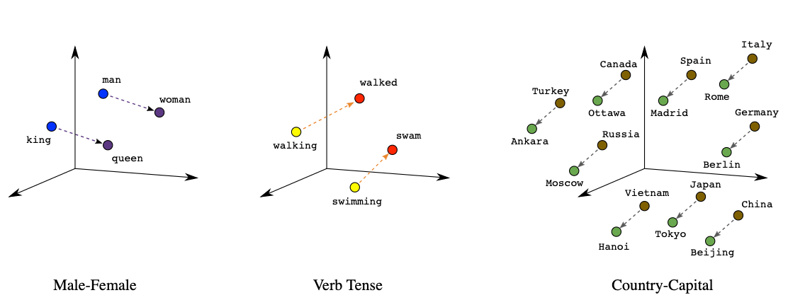
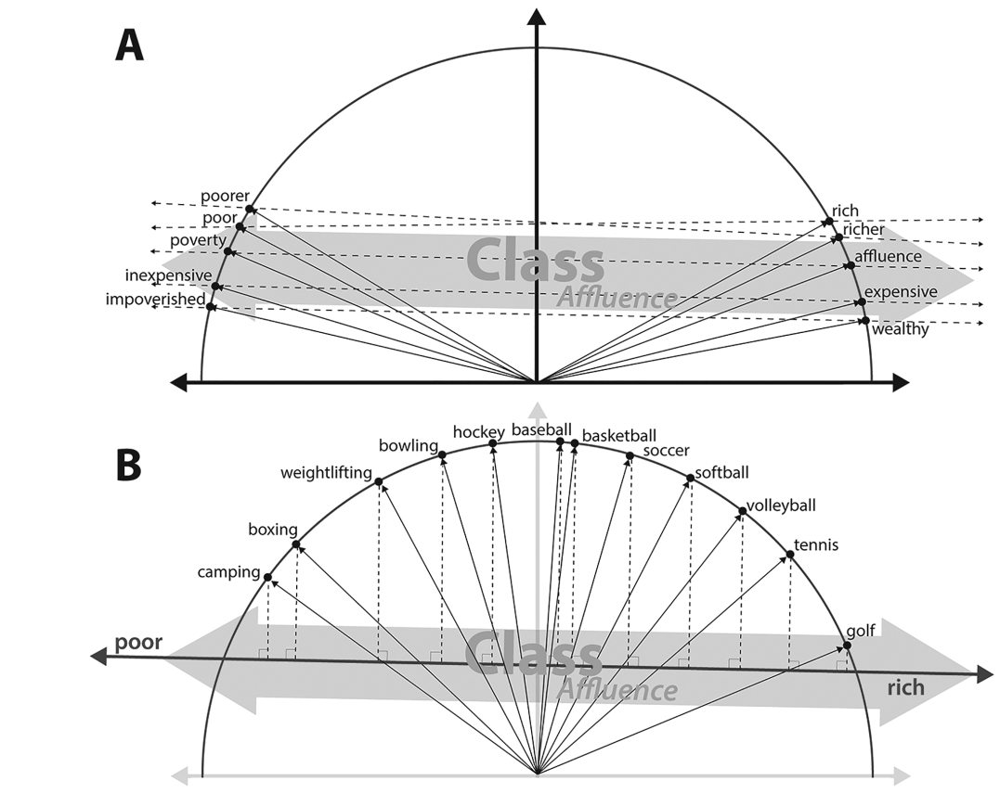
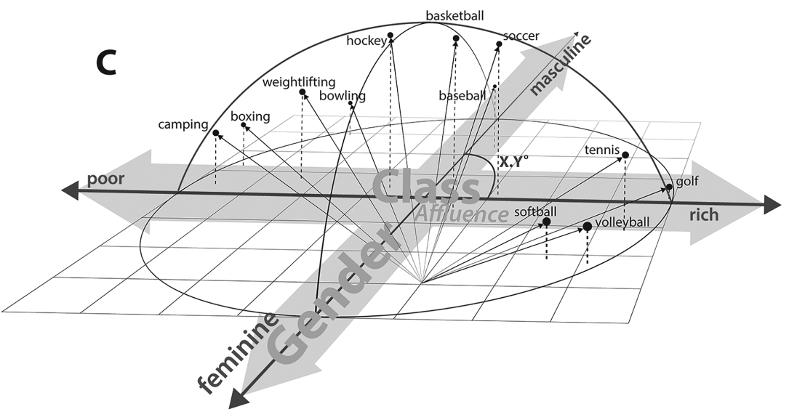

Charlie Carter
c.carter3@lse.ac.uk
London School of Economics
1/25/23
Is terrorism truly contested?
What features of states might explain how they understand and use the term ‘terrorism’?
Domestic Politics, Public Opinion, and Threats
Expectations
Framing, Political Rhetoric, and Strategy
Expectations
À la Carte Embedding for measurement (Arora et al., 2015; Khodak et al., 2018)
conText embedding regression (Rodriguez, Spirling, and B. M. Stewart, 2022) for inference
Predict a word-embedding vector for a use of the term ‘terrorism’ given country-year and individual-year attributes + year FE
Embeddings are
Quantitative representations of words or word-like tokens
generally derived from machine learning models
vectors in a Euclidean space which encodes socially-significant linguistic dimensions
Words with similar meanings will occupy similar positions in the semantic space
Linear Algebra Properties
https://towardsdatascience.com/the-magic-behind-embedding-models-c3af62f71fb


“The Geometry of Culture”. Kozlowski, Taddy, and Evans, 2019.
Jordan 1985, Session 40
“unwavering position in the condemnation of
terrorism
irrespective of its nature and source”
Cuba 1996, Session 51
“The argument for this is the alleged war against
terrorism
, when, in fact, the United States was the main promoter of terrorism in its dirty wars in Nicaragua”
Iran 2005, Session 60
“State
terrorism
is being supported by those who claim to fight terrorism.”
Jordan 1985, Session 40
“unwavering position in the condemnation of
terrorism
irrespective of its nature and source”
Cuba 1996, Session 51
“The argument for this is the alleged war against
terrorism
, when, in fact, the United States was the main promoter of terrorism in its dirty wars in Nicaragua”
Iran 2005, Session 60
“State
terrorism
is being supported by those who claim to fight terrorism.”
https://charliecarter.github.io/IR504_Presentation/